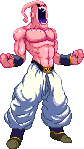
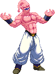

activate Hunger Mode (LV2)
Activating Hunger Mode makes Buu more dangerous! This changes a few things, gameplay-wise.
-At activation, an empty Majin 'M' symbol appears onscreen. Its level is indicated by the color it gets filled up with: yellow = LV1, red = LV2, black = LV3.
-Power Charging is still possible with MP+MK.
-Hunger Power Charge can be done by down+MP+MK.
-Can now perform Just Defend (press Back for high/mid attacks or Down-Back for low attacks at the instant an opponent's attack would have otherwise hit you). Succesfully performing it gives Buu faster recovery along with an health and Hunger Bar gain. Just Defend can be cancelled into Buu Ball.
-Buu gains Guard Push, performed with 3P while blocking. Using this gives him steam as an indicator he cannot use it again until the steam stops.
-Gain access to Armor Mode (detailed below).
-Kill You gains Finishers at the end, there are three variants:
LV1 - Vanishing Ball.
LV2 - Chocolate Revel.
LV3 - Human Extinction Attack.
-At activation, an empty Majin 'M' symbol appears onscreen. Its level is indicated by the color it gets filled up with: yellow = LV1, red = LV2, black = LV3.
-Power Charging is still possible with MP+MK.
-Hunger Power Charge can be done by down+MP+MK.
-Can now perform Just Defend (press Back for high/mid attacks or Down-Back for low attacks at the instant an opponent's attack would have otherwise hit you). Succesfully performing it gives Buu faster recovery along with an health and Hunger Bar gain. Just Defend can be cancelled into Buu Ball.
-Buu gains Guard Push, performed with 3P while blocking. Using this gives him steam as an indicator he cannot use it again until the steam stops.
-Gain access to Armor Mode (detailed below).
-Kill You gains Finishers at the end, there are three variants:
LV1 - Vanishing Ball.
LV2 - Chocolate Revel.
LV3 - Human Extinction Attack.

Armor Mode
Buu can use all of the Hunger Bar and pour it into this one mode.
The Armor Mode is a powered-up state which greatly buffs up your defence. The Hunger Bar will
begin to drain from whatever point you managed to fill it beforehand and the Armor Mode lasts until it's drained completely.
-Blocking the opponent's attacks refills a portion of the Hunger Bar.
-Hunger Bar depletes while Buu has armor. It does not deplete while armor is inactive from being hit.
-Armor Mode can carry to next round on win.
-Blocking the opponent's attacks refills a portion of the Hunger Bar.
-Hunger Bar depletes while Buu has armor. It does not deplete while armor is inactive from being hit.
-Armor Mode can carry to next round on win.